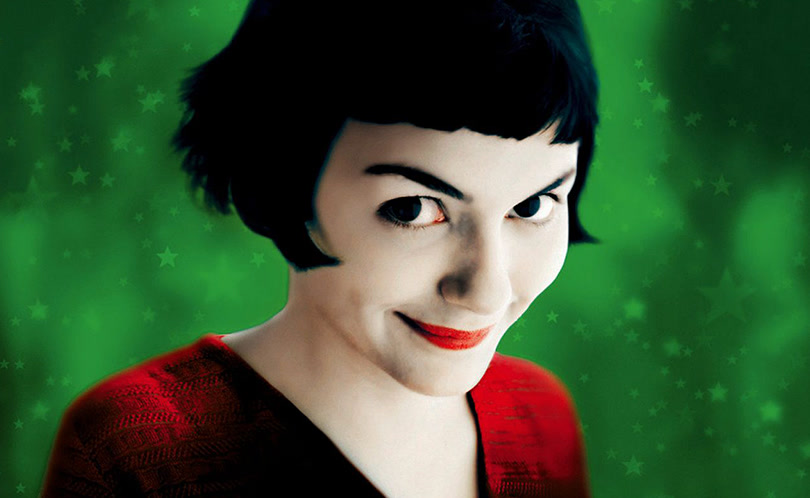

Амели
Фильм «Амели» (Le Fabuleux destin d'Amélie Poulain) — мелодрама с глубоким анализом людей и жизни, вышедшая на экраны в 2001 году.
По первым кадрам картины понятно, что нас ждет необычная история. Погружение зрителя в сказочную атмосферу происходит моментально. Этот фильм и весь французский кинематограф со своими воодушевляющими мелодрамами — маленькая отдушина, для измученного социальными драмами русского сердца.
Амели с Монмартра — девочка, которая уже выросла, но в душе осталась ребенком. Она живет в мире фантазий, гармонично существующем с реальностью, но минимально соприкасающемся с ней. Робкие попытки быть как все, не увенчавшиеся успехом, оставили ее в одиночестве.
На картине Ренуара «Завтрак гребцов» — она, та девушка со стаканом воды, тайными мыслями и загадочным взглядом. Она одиночка в толпе. Ее присутствие в этом мире так же, как и в обществе, — не ощутимо, но случай или судьба переворачивают жизнь этой девушки и ее окружения.
Подарок из прошлого, маленькая коробочка с воспоминаниями о детстве неизвестного мальчишки, запускают цепочку событий. Отныне Амели будет вмешиваться в судьбы других. Теперь она не просто наблюдатель, а активный участник.
Выдающимся этот фильм сделал — прекрасный актерский состав, но особое внимание к Одри Тоту: ее выразительный взгляд и обворожительная улыбка, не оставят равнодушным, даже самого скептически настроенного зрителя. Фильм красочный, солнечный. Франция в нем представлена не напыщенной дамой в ярких туалетах, а юной девушкой в легком домашнем халате.
В этой картине нет банальных поворотов сюжета и штампов, часто встречающихся в фильмах данного жанра. Здесь все органично: тонкий юмор, сентиментальные моменты, любимые всеми барышнями, но не наигранные и не затянутые. Вас ждут слезы, но не горечи, а счастья.
О чем эта мелодрама? Вы скажете, что, скорее всего, о любви! Конечно, любовная история лежит в основе, но, в первую очередь, это фильм о людях! Кто твой сосед или друг, почему он такой, что он прячет в своей душе и мыслях… и как ему помочь. Этот фильм о том, что человеку нужен человек!